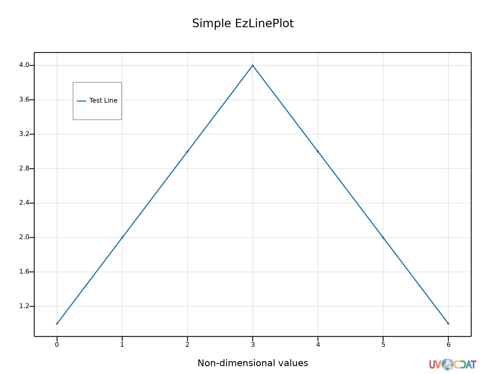
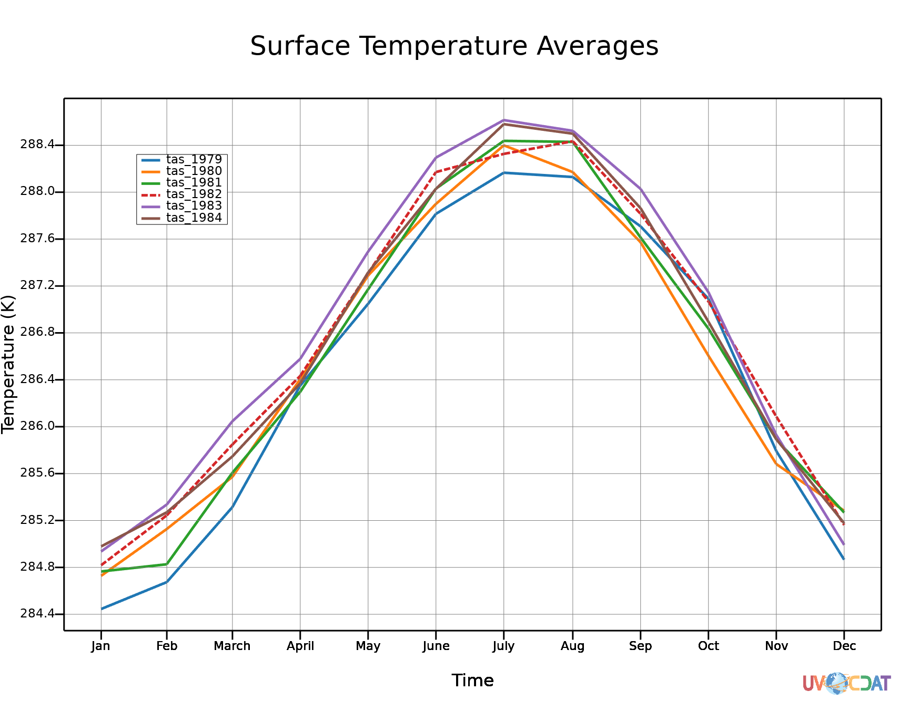

EzPlot Library is a library built to help users of UV-CDAT generating beautiful plots easily.
EzPlot first sub-package: "EzLinePlot" is designed to create 1D line plots.
EzPlot is easy to use.
It consist in a 2 steps process
EzLinePlot creates 1D beautiful plots. It is capable of adjusting the axis data ranges in order to obtain consistent and beautiful plots.
EzLinePlot is designed to be configurable. The parameters available for the user are:
data: List of variables to plot
canvas: VCS canvas
template: The template to use as the base for the plot.
line: A line object or name of a line object used to describe the lines plotted. Set to None to hide.
linetypes: List of VCS valid line types. Ex. solid, dash, etc. Set to None to hide.
linewidths: List of line widths. Set to None to hide.
linecolors: List of line colors. Set to None to hide.
backgroundcolor: Canvas background color. Set to None to hide.
colormap: A valid VCS colormap. Set to None to hide.
randomcolor: Set the line colors in a random way.
title: A VCS text type or a string text for the plot title. Set to None to hide.
left_label: Text to put on the left Y axis.
right_label: Text to put on the right Y axis.
bottom_label: Text to put on the bottom.
top_label: Text to put on the top.
marker: A marker object or name of a marker object used to describe the markers plotted. Set to None to hide.
markercolors: A list of valid VCS colors. Set to None to hide.
markertypes: A list of valid VCS marker types. Ex: dot, None, etc. Set to None to hide.
markersizes: A list of valid marker sizes. Ex: [4, 3, 1]. Set to None to hide.
legendtexts: List of strings with for the legend texts. Set to None to hide.
legendscratched:
legendtextcolors: List of valid VCS colors for the legend texts. Ex. ["black", "yellow"].
legendposition: List of 4 values"[x1, x2, y1, y2]. Set to None to hide.
legendstacking: Set to "horizontal" or "vertical"
legenddrawbackground: Boolean enabling/disabling background rendering. Set to None to hide.
legendbackgroundcolor: A valid VCS color for the legend box background. Set to None to hide.
legendsmallestfontsize: Minimal value for the legend font size.
tick_sides: A list of "left" or "right" values indicating which side of the chart you want the variable axes to be displayed.
framewidth: The width of the frames lines.
autoxaxis: Boolean enabling/disabling auto range for the X axis. Enabled by default.
autoyaxis: Boolean enabling/disabling auto range for the Y axis. Enabled by default.
min_y: If you want to adjust the y axis bounds, you can set a minimum value. Will be derived from data if not specified.
max_y: If you want to adjust the y axis bounds, you can set a maximum value. Will be derived from data if not specified.
min_x: If you want to adjust the x axis bounds, you can set a minimum value. Will be derived from data if not specified.
max_x: If you want to adjust the x axis bounds, you can set a maximum value. Will be derived from data if not specified.
x_labels: Dictionary for setting axis tick labels
y_labels: Dictionary for setting axis tick labels
enablegrid: Boolean enabling/disabling the grid rendering.
Besides all these variables, one can also set the default percentage of range increasing for the axis, the color of the grid and the base automatic colormap for the object:
rangeincrease
defaultgridcolor
defaultlinecolors
Simple line plot:
import os
import vcs
import cdms2
import vcsaddons.EzPlot
import cdutil
# Simple Plot with EzPlot
if __name__ == "__main__":
variables = [[1, 2, 3, 4, 3, 2, 1]]
plotfunction = vcsaddons.EzPlot.EzLinePlot(defaultgridcolor=[(50, 50, 50, 50)])
canvas = vcs.init()
# Customize the lines used to draw the plots
line_type = ["solid"]
line_widths = [8]
# Customize the markers drawn
marker_type = [None]
# Customize Legend Text
legend_texts = ["Test Line"]
legend_text_colors = ['black']
marker = vcs.createmarker()
marker.size = 6
marker.color = ["black", "black"]
marker.type = ["triangle_up", "triangle_down"]
plotfunction.lineplot(data=variables, canvas=canvas, title="Simple EzLinePlot",
autoxaxis=True, autoyaxis=True,
marker=marker, bottom_label="Non-dimensional values",
legendtextcolors=legend_text_colors, legendtexts=legend_texts,
enablegrid=True, legendbackgroundcolor="white")
canvas.png("EzPlot_Simple")
Result:

Spaghetti example:
import os
import vcs
import cdms2
import vcsaddons.EzPlot
import cdutil
# Classic Spaghetti Plot with EzPlot
if __name__ == "__main__":
# A quick example on how to use the above function
f = cdms2.open(os.path.join(vcs.sample_data, "tas_ccsr-95a.xml"))
variables = []
for i in range(6):
tas = f("tas", slice(i*12, (i+1)*12)) # Extract one year
# Assign an ID that will distinguish the years
tas.id = "tas_%i" % tas.getTime().asComponentTime()[0].year
# Manipulating the variable changes the id; we'll save it here.
saved_id = tas.id
# Make sure the data is bounded before averaging
cdutil.setTimeBoundsMonthly(tas)
var = cdutil.averager(tas(squeeze=1), axis="xy")
var = cdutil.ANNUALCYCLE.climatology(var)
var.id = saved_id
variables.append(var)
plotfunction = vcsaddons.EzPlot.EzLinePlot()
canvas = vcs.init()
# Customize the lines used to draw the plots
line_type = ["solid", "solid", "solid", "long-dash", "solid", "solid"]
line_widths = [5, 5, 5, 5, 5, 5]
# Customize the markers drawn
marker_type = [None, None, None, None, None, None]
# Middle of the month (from the time axis)
months = {
15.5: "Jan",
45.0: "Feb",
74.5: "March",
105.0: "April",
135.5: "May",
166.0: "June",
196.5: "July",
227.5: "Aug",
258.0: "Sep",
288.5: "Oct",
319.0: "Nov",
349.5: "Dec"
}
# Legend Text
legend_text = ["tas_1979", "tas_1980", "tas_1981", "tas_1982", "tas_1983", "tas_1984"]
legend_text_color = ['black', 'black', 'black', 'black', 'black', 'black']
plotfunction.lineplot(data=variables, canvas=canvas, line=None, linetypes=line_type,
#colormap=vcs.matplotlib2vcs("jet"),
#colormap=canvas.createcolormap('example', 'categorical'),
#randomcolor=True,
markertypes=marker_type, linewidths=line_widths,
legendtexts=legend_text, legendtextcolors=legend_text_color, legendbackgroundcolor="white",
left_label="Temperature (K)", x_labels=months,
title="Surface Temperature Averages",
enablegrid=True)
f.close()
canvas.png("EzPlot_Spaghetti")
Result:
